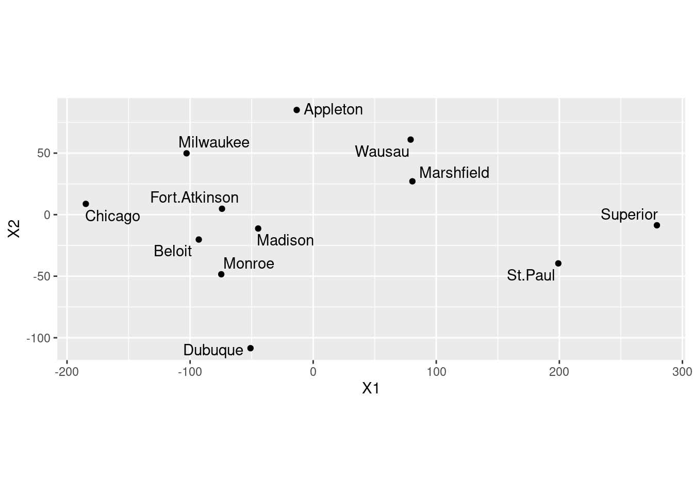
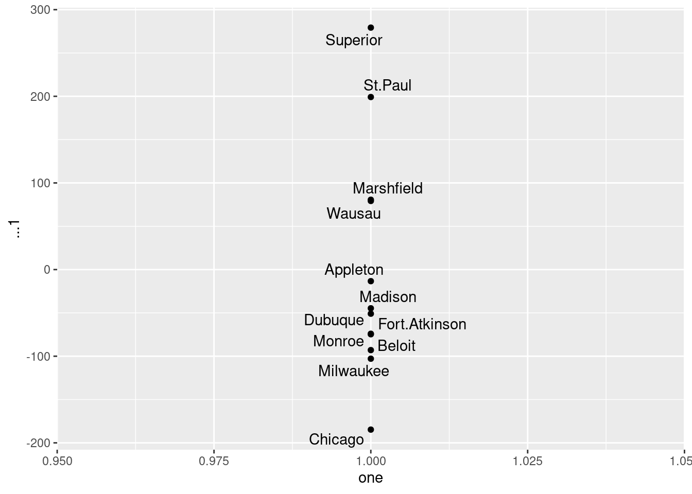
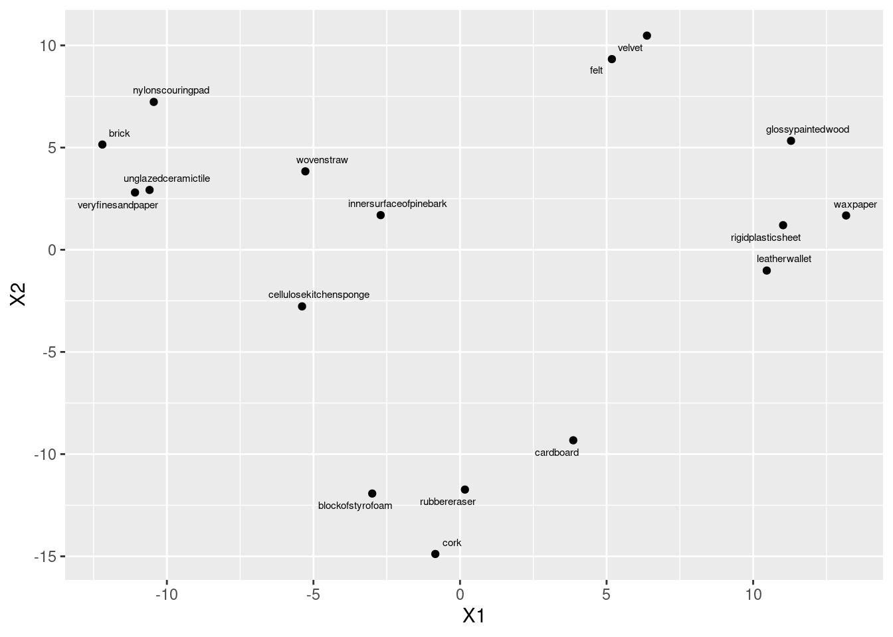
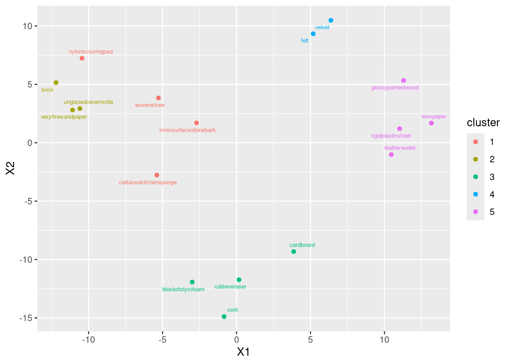
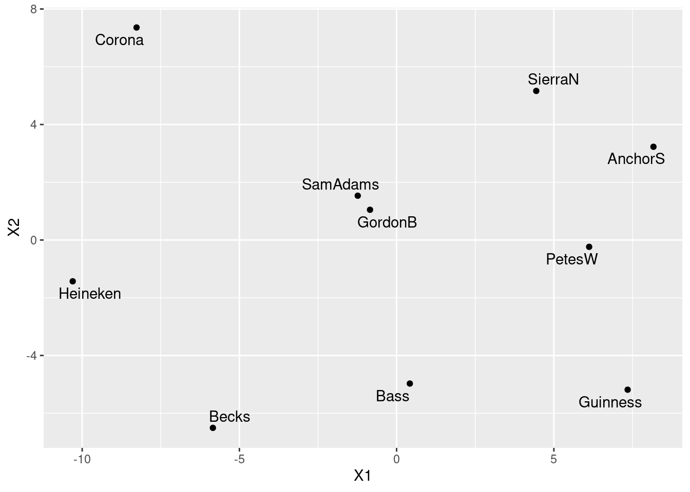
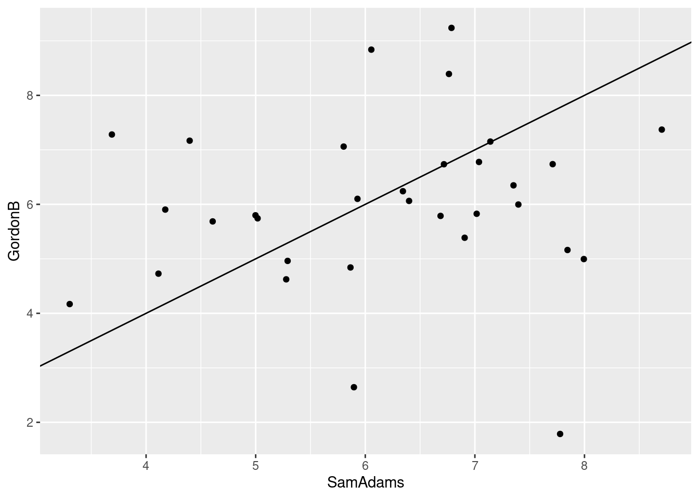
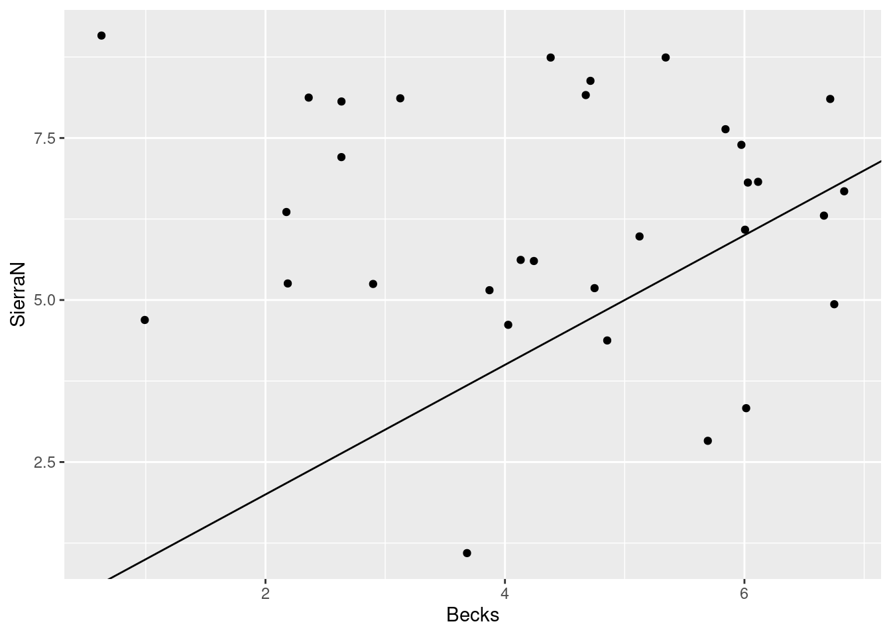
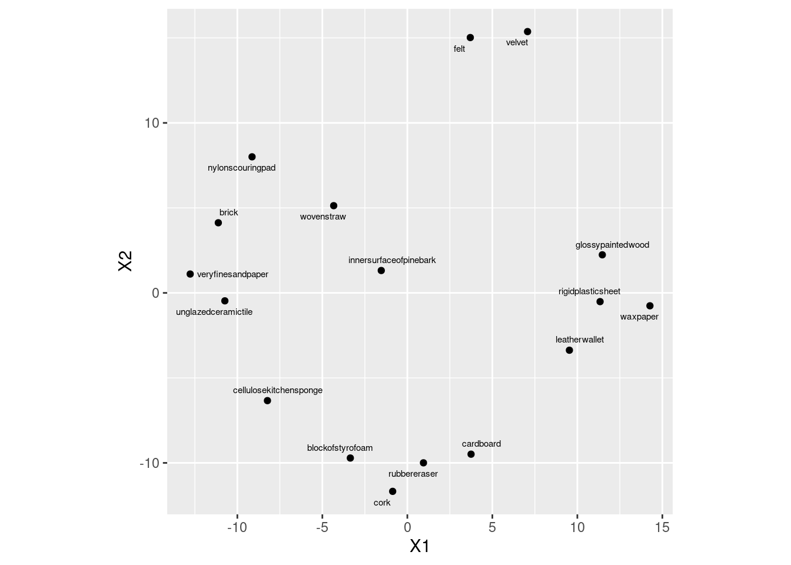

library(ggbiplot)
library(tidyverse)
library(ggrepel)39 Multidimensional Scaling
Packages for this chapter:
39.1 Making a map of Wisconsin
The file link contains the road distances (in miles) between 12 cities in Wisconsin and neighbouring states. We are going to try to reproduce a map of the area using multidimensional scaling.
Read in the data and create a
distobject, bearing in mind that the data in the file are already distances. Display yourdistobject. Probably, displaying the data that you read in is a good idea also.Obtain a vector containing the city names. (This is easy, and not really necessary, but it was here before when I did things a different way.)
Run a (metric) multidimensional scaling on the data, to obtain a two-dimensional representation of the cities. (You don’t need to look at the results yet.)
Plot the results of the multidimensional scaling, labelling the cities with their names. Use your judgement to decide where to place the city names, and how to make sure the whole city names are shown on the map.
Are cities close together on your map also close together in real life? Give an example or two.
Obtain a Google (or other) map of the area containing these twelve cities. (The way I expected you to do this when this was a hand-in problem was to take a screenshot or similar and include that in your document.)
Discuss how the map that came out of the multidimensional scaling corresponds to the actual (Google) map.
Calculate something that demonstrates that a one-dimensional map of the cities is a much worse representation than the two-dimensional one that we made before. (I’m planning to get to this in class, but if we skip it, don’t worry about this part.)
39.2 Things that feel similar to each other
Which objects feel similar to one another and which ones feel different? Can we draw them on a “map”? 30 subjects1 were each given 17 different objects to feel, for example “inner surface of pine bark”, “rubber eraser” and “nylon scouring pad”. The subjects had to group the objects into a maximum of 8 groups such that the objects within a group felt similar, and the ones in different groups felt different.2 A dissimilarity matrix was formed by counting how many subjects put each pair of objects into different groups, so that the dissimilarity ranged from 0 (the objects were always put together in the same group) to 30 (the objects were not put together into the same group by any of the subjects).
The data are in link.
Look at the data, and read in the file appropriately. Do you have something square in shape, apart from any columns of object names? Do your columns have the same names as the objects?
Obtain the names of the objects. Note that they are rather long.
Set the column names of your data frame to be your object names, using
names. Before you rush to do that, figure out how many column names you need, and supply values for any extra ones. Check that your data frame now has the right column names.*
Convert your data frame into a distance object. Take a look at the (rather long) result.Obtain and plot a (metric) multidimensional scaling map of these data. Label the points with the name of the object they represent. (Note that
geom_text_repelhas an optionsizethat controls the size of the text.)Find a pair of objects that are close together on your plot. Look back at your answer to part~(here): is the distance between those objects small? Explain briefly.
Obtain a measure of goodness of fit for this multidimensional scaling map.
Obtain a cluster analysis for the same data, using Ward’s method. Obtain a dendrogram. What seems to be an appropriate number of clusters? Mark them on your dendrogram too.
Discuss as briefly as seems reasonable whether your clusters tell the same story as the map that came from multidimensional scaling. (There were only three marks for this, so you don’t need to go overboard.) Optionally, think about creating a plot that will make it easier to see the correspondence between your clusters and the MDS map.
39.3 Confusing letters
Two researchers studied how often people mistook one letter for another one. They did this by showing their subjects each (uppercase) letter for a few milliseconds only, and asking them which letter (out of a list) they just saw. The researchers obtain a “confusion matrix” in which, for example, the W-Q entry is the total of W’s taken as Q and Q’s taken as W. This confusion matrix is in link. Note that the confusions are actually similarities rather than dissimilarities: a large number means that the two letters concerned are easily confused, that is, similar. Similarities can be converted to dissimilarities by subtracting them from a larger number than anything in the table (that is, subtracting from 21 is good here).
Read in the confusion matrix and convert it to dissimilarities and then to a
distobject, displaying thedistobject that you obtain.Run a multidimensional scaling, with the default two dimensions, on your
distobject, and display the results. (Making a graph is coming later.)Obtain a vector of the names of the letters that were confused in this study.
Plot your multidimensional scaling map. To do this, first create a data frame containing the points you want to plot and their labels, and then plot the points labelled by the right thing.
Pick a pair of letters appear close together on your map. Does it make sense, from looking at these letters, that they would be easy to confuse? Explain briefly.
Verify that your chosen pair of letters was often confused in the data.
39.4 More beer please
Previously, you did a cluster analysis of ten brands of beer, as rated by 32 students. This time, we will do a non-metric multidimensional scaling of those same brands of beer. The data are in link.
Noting that we want to assess distances between brands of beer, read in the data and do whatever you need to do to work out distances between the beers. Show your result.
Obtain a non-metric multidimensional scaling of the beers. (Comment coming up in a moment.)
Obtain the
stressvalue of the map, and comment on it.Obtain a map of the beers, labelled with the names of the beers.
Find a pair of beers close together on your map. Are they similar in terms of student ratings? Explain briefly.
In our cluster analysis, we found that Anchor Steam, Pete’s Wicked Ale, Guinness and Sierra Nevada were all in the same cluster. Would you expect them to be close together on your map? Are they? Explain briefly.
39.5 Feeling similar, again
Previously, we looked at an experiment about which objects feel similar to one another and which ones feel different.
30 subjects were each given 17 different objects to feel, for example “inner surface of pine bark”, “rubber eraser” and “nylon scouring pad”. The subjects had to group the objects into a maximum of 8 groups such that the objects within a group felt similar, and the ones in different groups felt different. A dissimilarity matrix was formed by counting how many subjects put each pair of objects into different groups, so that the dissimilarity ranged from 0 (the objects were always put together in the same group) to 30 (the objects were not put together into the same group by any of the subjects).
The data are in link. These have no column names.
This time we are going to try non-metric multidimensional scaling, to see whether that produces a more reasonable map. The reading in of the data is the same as before (so I have reduced the marks given for it).
Obtain and display the distance matrix that you used last time for these data. (I don’t care whether you run all the code again, or whether you just produce the matrix from where you had it before on R Studio. Correct is all I care about.)
Obtain a non-metric multidimensional scaling map of the objects. (No plotting or comments yet.)
* Obtain a number that says how well the map reproduces the distances in the data, and comment on that number.
Plot the non-metric multidimensional scaling map. Label each point with its (full) object name, sized suitably.
* Find all the distances in your distance matrix that are 10 or less (there should be three of them). Find these pairs of objects on your map. Describe where they are on your map. Do they appear to be the three closest pairs of objects?
Consider again your conclusions in parts (here) and (here). Explain briefly how they are consistent.
Would a three-dimensional map work better than a two-dimensional one, bearing in mind that a three-dimensional map will need something like
rglto interpret? Calculate something that will help you decide, and explain what you think.
My solutions follow:
39.6 Making a map of Wisconsin
The file link contains the road distances (in miles) between 12 cities in Wisconsin and neighbouring states. We are going to try to reproduce a map of the area using multidimensional scaling.
- Read in the data and create a
distobject, bearing in mind that the data in the file are already distances. Display yourdistobject. Probably, displaying the data that you read in is a good idea also.
Solution
my_url <- "http://ritsokiguess.site/datafiles/wisconsin.txt"
wisc <- read_table(my_url)
── Column specification ────────────────────────────────────────────────────────
cols(
location = col_character(),
Appleton = col_double(),
Beloit = col_double(),
Fort.Atkinson = col_double(),
Madison = col_double(),
Marshfield = col_double(),
Milwaukee = col_double(),
Monroe = col_double(),
Superior = col_double(),
Wausau = col_double(),
Dubuque = col_double(),
St.Paul = col_double(),
Chicago = col_double()
)wiscThe first time I did this, I had a blank line on the end of the data file, so I had a blank location and missing values for all the distances for it. I tidied that up before sharing the file with you, though.
So, the first column is the names of the places, which we should get rid of before we make a dist object using as.dist (since what we read in is already distances). The columns are also the names of the places, so we won’t lose anything by getting rid of the location column:
d <- wisc %>%
select(-location) %>%
as.dist()
d Appleton Beloit Fort.Atkinson Madison Marshfield Milwaukee Monroe
Beloit 130
Fort.Atkinson 98 33
Madison 102 50 36
Marshfield 103 185 164 138
Milwaukee 100 73 54 77 184
Monroe 149 33 58 47 170 107
Superior 315 377 359 330 219 394 362
Wausau 91 186 166 139 45 181 186
Dubuque 196 94 119 95 186 168 61
St.Paul 257 304 287 258 161 322 289
Chicago 186 97 113 146 276 93 130
Superior Wausau Dubuque St.Paul
Beloit
Fort.Atkinson
Madison
Marshfield
Milwaukee
Monroe
Superior
Wausau 223
Dubuque 351 215
St.Paul 162 175 274
Chicago 467 275 184 395\(\blacksquare\)
- Obtain a vector containing the city names. (This is easy, and not really necessary, but it was here before when I did things a different way.)
Solution
The location column of the data frame you read in from the file:
cities <- wisc$location
cities [1] "Appleton" "Beloit" "Fort.Atkinson" "Madison"
[5] "Marshfield" "Milwaukee" "Monroe" "Superior"
[9] "Wausau" "Dubuque" "St.Paul" "Chicago" \(\blacksquare\)
- Run a (metric) multidimensional scaling on the data, to obtain a two-dimensional representation of the cities. (You don’t need to look at the results yet.)
Solution
wisc.1 <- cmdscale(d)\(\blacksquare\)
- Plot the results of the multidimensional scaling, labelling the cities with their names. Use your judgement to decide where to place the city names, and how to make sure the whole city names are shown on the map.
Solution
Let’s see what wisc.1 has in it, and make a data frame of the right thing:
head(wisc.1) [,1] [,2]
Appleton -13.37076 85.067148
Beloit -92.94157 -20.205916
Fort.Atkinson -74.07473 4.804039
Madison -44.68148 -11.252521
Marshfield 80.61250 27.097882
Milwaukee -102.87582 49.849552Two unnamed columns (the display indicates that it’s a matrix rather than a data frame). As we saw in class, if we make a data frame out of this, the columns will get names X1 and X2. Those are perfectly good names for coordinates. The city names on the left of wisc.1 are actually row names rather than an actual genuine column. It’s probably best not to assume that they will make it through the transition to a data frame, so we’ll explicitly create a column called city with the city names (that we saved before):
dd <- data.frame(wisc.1, city = cities)
ddThere are only 12 rows, so it’s fine to display them all.
I’m calling this one dd since I have another d elsewhere that I want to keep. I should use better names.
I think the best use of your judgement is to go straight to geom_text_repel from package ggrepel:
ggplot(dd, aes(x = X1, y = X2, label = city)) +
geom_point() +
geom_text_repel() +
coord_fixed()
Your map may come out different from mine, but subject to the usual stuff about rotation and reflection it should be equivalent to mine. You should include the coord_fixed to get the scales the same (a corresponding distance on the two scales should take the same space). This one didn’t come out quite square because the MDS says the points should be in a rectangle (stretching further one way than the other).
\(\blacksquare\)
- Are cities close together on your map also close together in real life? Give an example or two.
Solution
On the map, the trio of cities Madison, Beloit and Fort Atkinson are closest together. How far apart are they actually? Well, you can go back to the original file (or display of what I called d) and find them, or you can do this:
cities [1] "Appleton" "Beloit" "Fort.Atkinson" "Madison"
[5] "Marshfield" "Milwaukee" "Monroe" "Superior"
[9] "Wausau" "Dubuque" "St.Paul" "Chicago" Cities 2, 3 and 4, so:
wisc %>% slice(2:4) %>% select(c(1, 3:5))The column numbers are off by one, since the first column is the names of the cities, which I decided to display here. It came out right, anyway.
These are all less than 50 miles or less apart. There are some others this close in the original data: Monroe and Madison are 47 miles apart, Wausau and Marshfield are 45 miles apart, but these appear further apart on the map. Extra: the slice-select thing doesn’t work on d because that is not a data frame. It is actually stored internally as a one-dimensional vector that displays nicely, but if you want to pull things out of it you have to figure out where in the vector they are:
print.default(d) [1] 130 98 102 103 100 149 315 91 196 257 186 33 50 185 73 33 377 186 94
[20] 304 97 36 164 54 58 359 166 119 287 113 138 77 47 330 139 95 258 146
[39] 184 170 219 45 186 161 276 107 394 181 168 322 93 362 186 61 289 130 223
[58] 351 162 467 215 175 275 274 184 395
attr(,"Labels")
[1] "Appleton" "Beloit" "Fort.Atkinson" "Madison"
[5] "Marshfield" "Milwaukee" "Monroe" "Superior"
[9] "Wausau" "Dubuque" "St.Paul" "Chicago"
attr(,"Size")
[1] 12
attr(,"call")
as.dist.default(m = .)
attr(,"class")
[1] "dist"
attr(,"Diag")
[1] FALSE
attr(,"Upper")
[1] FALSEIf you compare that with the usual display of d, this way goes all the way down the first column ending at 130, then all the way down the second column (which has one fewer entry), ending at 467, and so on. Thus the three entries we picked out are at \(11+1=12\), \(11+2=13\), and \(11+10+1=22\):
d[12][1] 33d[13][1] 50d[22][1] 36It’s very easy to be off by one in this sort of calculation. There are 12 cities altogether, so 11 distances in the first column, 10 in the second, and so on. This was about my third attempt.
I don’t much care which cities you look at. Finding some cities that are reasonably close on the map and doing some kind of critical assessment of their actual distances apart is all I want.
\(\blacksquare\)
- Obtain a Google (or other) map of the area containing these twelve cities. (The way I expected you to do this when this was a hand-in problem was to take a screenshot or similar and include that in your document.)
Solution
I do this using R in the maps chapter. See there for how to do it this way.
\(\blacksquare\)
- Discuss how the map that came out of the multidimensional scaling corresponds to the actual (Google) map.
Solution
Let’s pick a few places from the actual map, and make a table of where they are on the actual map and the cmdscale map:
Place Real Cmdscale
----------------------------------------------
Superior northwest central east
St. Paul central west southeast
Dubuque central south central south
Chicago southeast central west
Appleton central east central north
This is a bit tricky. Dubuque is the only one in the right place, and the others that were west have become east and vice versa. So I think there is a flipping across a line going through Dubuque. That seems to be the most important thing; if you imagine the other points being flipped across a line going north-south through Dubuque, they all end up in about the right place. There might be a little rotation as well, but I’ll call that close enough.
(For you, any comment along the lines of “flipped around this line” or “rotated about this much” that seems to describe what has happened, is fine.)
\(\blacksquare\)
- Calculate something that demonstrates that a one-dimensional map of the cities is a much worse representation than the two-dimensional one that we made before. (I’m planning to get to this in class, but if we skip it, don’t worry about this part.)
Solution
Run again with eig=T and take a look at GOF (uppercase):
cmdscale(d, 2, eig = T)$GOF[1] 0.9129333 0.9315871cmdscale(d, 1, eig = T)$GOF[1] 0.7916925 0.8078690The goodness-of-fit of the two-dimensional solution is pretty good,3 but that of the one-dimensional solution (which arranges all the cities along a line) is pretty awful in comparison.
How awful? Let’s find out. I should have saved it from just above, but now I have to do it again. For the plot, ones is a string of ones, as many as there are cities.
ones <- rep(1, 12)
v <- cmdscale(d, 1, eig = TRUE)
as_tibble(v$points, .name_repair = "unique") %>%
mutate(one = ones, city = cities) -> dddNew names:
• `` -> `...1`dddThe one-column matrix of points didn’t have column names, so I needed to give as_tibble explicit permission to create one, and it acquired the name ...1). The plot:
ggplot(ddd, aes(x = one, y = ...1, label = city)) +
geom_point() + geom_text_repel()
The cities get mapped onto a line that goes northwest (top) to southeast (bottom). This is not completely terrible, since there aren’t really any cities in the northeast of the state, but it is pretty awful.
\(\blacksquare\)
39.7 Things that feel similar to each other
Which objects feel similar to one another and which ones feel different? Can we draw them on a “map”? 30 subjects4 were each given 17 different objects to feel, for example “inner surface of pine bark”, “rubber eraser” and “nylon scouring pad”. The subjects had to group the objects into a maximum of 8 groups such that the objects within a group felt similar, and the ones in different groups felt different.5 A dissimilarity matrix was formed by counting how many subjects put each pair of objects into different groups, so that the dissimilarity ranged from 0 (the objects were always put together in the same group) to 30 (the objects were not put together into the same group by any of the subjects).
The data are in link.
- Look at the data, and read in the file appropriately. Do you have something square in shape, apart from any columns of object names? Do your columns have the same names as the objects?
Solution
Looking at the file first, there are no column names. So we have to tell read_delim that:
my_url <- "http://ritsokiguess.site/datafiles/stimuli.txt"
stimuli <- read_delim(my_url, " ", col_names = FALSE)Rows: 17 Columns: 18
── Column specification ────────────────────────────────────────────────────────
Delimiter: " "
chr (1): X1
dbl (17): X2, X3, X4, X5, X6, X7, X8, X9, X10, X11, X12, X13, X14, X15, X16,...
ℹ Use `spec()` to retrieve the full column specification for this data.
ℹ Specify the column types or set `show_col_types = FALSE` to quiet this message.stimuliI have 17 rows and 18 columns, but one of the columns is the column of object names. So I really do have the same number of rows and columns of dissimilarities: that is, it is square in shape apart from the names.
The columns do not have the same names as the objects; R has used the X1, X2, ... names that it uses when you do not have column headers.
I could have supplied the object names to col_names, but that is a lot more work than what we do below.
\(\blacksquare\)
- Obtain the names of the objects. Note that they are rather long.
Solution
The object names are in the first column, X1, of the data frame:
objects <- stimuli$X1
objects [1] "innersurfaceofpinebark" "brick" "cardboard"
[4] "cork" "rubbereraser" "felt"
[7] "leatherwallet" "rigidplasticsheet" "veryfinesandpaper"
[10] "nylonscouringpad" "cellulosekitchensponge" "wovenstraw"
[13] "blockofstyrofoam" "unglazedceramictile" "velvet"
[16] "waxpaper" "glossypaintedwood" I’m saving these for later.
\(\blacksquare\)
- Set the column names of your data frame to be your object names, using
names. Before you rush to do that, figure out how many column names you need, and supply values for any extra ones. Check that your data frame now has the right column names.
Solution
I have 18 columns to name (including the column of object names), but only 17 names, so I need to supply an extra one:
names(stimuli) <- c("object", objects)
stimuli\(\blacksquare\)
- *
Convert your data frame into a distance object. Take a look at the (rather long) result.
Solution
This is as.dist, since we have distances (dissimilarities) already. Don’t forget to take off the first column!
d <- stimuli %>% select(-1) %>% as.dist()I can try and show it all here, tiny, but even then it’s long because the column names are long:
w <- getOption("width")
options(width = 132)
d innersurfaceofpinebark brick cardboard cork rubbereraser felt leatherwallet rigidplasticsheet
brick 22
cardboard 23 27
cork 24 27 18
rubbereraser 26 27 19 15
felt 27 29 28 28 28
leatherwallet 26 29 23 25 20 24
rigidplasticsheet 23 28 24 26 27 28 22
veryfinesandpaper 24 16 24 28 24 29 28 27
nylonscouringpad 23 18 29 28 27 26 28 29
cellulosekitchensponge 23 28 27 20 24 26 27 29
wovenstraw 18 25 28 27 25 29 26 27
blockofstyrofoam 23 24 21 10 19 28 25 25
unglazedceramictile 21 10 26 26 24 29 29 25
velvet 28 29 28 28 29 4 24 29
waxpaper 24 28 24 28 24 28 21 12
glossypaintedwood 22 27 23 29 28 29 20 13
veryfinesandpaper nylonscouringpad cellulosekitchensponge wovenstraw blockofstyrofoam unglazedceramictile
brick
cardboard
cork
rubbereraser
felt
leatherwallet
rigidplasticsheet
veryfinesandpaper
nylonscouringpad 21
cellulosekitchensponge 24 22
wovenstraw 26 16 19
blockofstyrofoam 25 25 21 26
unglazedceramictile 12 24 26 26 25
velvet 29 27 27 28 29 29
waxpaper 29 29 29 27 26 28
glossypaintedwood 27 28 27 25 29 26
velvet waxpaper
brick
cardboard
cork
rubbereraser
felt
leatherwallet
rigidplasticsheet
veryfinesandpaper
nylonscouringpad
cellulosekitchensponge
wovenstraw
blockofstyrofoam
unglazedceramictile
velvet
waxpaper 27
glossypaintedwood 26 12options(width = w)The stuff with width was to make it display lots of columns, and then setting it back afterwards so as not to mess things up later. If you try and take head of this, you’ll lose the structure. I don’t know of a good way to display part of one of these.
\(\blacksquare\)
- Obtain and plot a (metric) multidimensional scaling map of these data. Label the points with the name of the object they represent. (Note that
geom_text_repelhas an optionsizethat controls the size of the text.)
Solution
This is the procedure. Talking about it is coming in a minute.
d.1 <- cmdscale(d, 2)
data.frame(d.1, stim = objects) %>%
ggplot(aes(x = X1, y = X2, label = stim)) + geom_point() +
geom_text_repel(size = 2)
cmdscale gets the coordinates to plot, then we plot them, and then we place the object names next to the points. I’m not quite sure what the scale is for size, but size=2 worked for me here, making the text a bit smaller (so that the labels don’t overlap), but not so small that you can’t read it. You’ll probably have to experiment to find a size that you like.
If you forget the 2 after the distance matrix in cmdscale, you’ll get a two-dimensional solution anyway (since two dimensions is the default). The output is an array of coordinates in two dimensions:
d.1 [,1] [,2]
innersurfaceofpinebark -2.7066290 1.694420
brick -12.2011332 5.147970
cardboard 3.8630322 -9.322759
cork -0.8424358 -14.884926
rubbereraser 0.1676463 -11.733873
felt 5.1803473 9.328562
leatherwallet 10.4636668 -1.016525
rigidplasticsheet 11.0208731 1.201504
veryfinesandpaper -11.0869483 2.800988
nylonscouringpad -10.4469053 7.232787
cellulosekitchensponge -5.3886609 -2.770991
wovenstraw -5.2762142 3.836948
blockofstyrofoam -2.9950151 -11.927717
unglazedceramictile -10.5902291 2.926805
velvet 6.3768882 10.477972
waxpaper 13.1702265 1.677039
glossypaintedwood 11.2914904 5.331796I note that any map that is the same as this apart from rotation and reflection is also fine (since the distances will be the same). I saw a lot of maps that were like mine but upside down (with cork at the top).6 No problem there.
\(\blacksquare\)
- Find a pair of objects that are close together on your plot. Look back at your answer to part~(here): is the distance between those objects small? Explain briefly.
Solution
I don’t mind (much) which objects you pick (as long as they are reasonably close together). Find the actual distance between them from what I called d in part~(here). Some possibilities:
Felt and velvet, Distance 4.
Block of styrofoam and rubber eraser. Distance 19 (not that small, but one of the smaller ones).
Rigid plastic sheet and wax paper. Distance 12. Smallish.
unglazed ceramic tile7 and very fine sandpaper. Distance 12. Smallish.
There won’t be a perfect relationship between distance in the distance matrix and on the map. In this case, there is an upper limit on distance (30, because 30 people rated the objects for similarity) and that upper limit is approached by many of the distances. (This suggests that non-metric multidimensional scaling, that just reproduces the order of the distances, might be a better idea for these data.) If objects A and B, and also B and C, are each close to 30 apart, then objects A and C will also be close to 30 apart, and that constrains them to be nearly in a triangle on the map. There are some 10s in the distance matrix, for example between block of styrofoam and cork, and also between unglazed ceramic tile and brick; these are a bit further apart on the map, but still close.
\(\blacksquare\)
- Obtain a measure of goodness of fit for this multidimensional scaling map.
Solution
This means fitting again, but this time with eig=T, and pulling out the thing called GOF. You can omit the 2, since that’s the default 2 dimensions:
d.2 <- cmdscale(d, 2, eig = T)
d.2$GOF[1] 0.4019251 0.4110603I didn’t ask you to comment on this, but the adjective that came to my mind was “disappointing”. I think that’s to do with the upper-limit-30 thing again. Also, this time (unlike with Wisconsin) there was no “right answer”, so maybe it just isn’t going to be very good. If you looked at several pairs of points above, you might have noticed that the correspondence between map distance and actual distance isn’t very good; this is the same issue.
I was curious about whether 3 dimensions would be any better:
d.2a <- cmdscale(d, 3, eig = T)
d.2a$GOF[1] 0.5775841 0.5907117That is quite a bit better. The problem with this, though, is that we need something like rgl to explore it with.
\(\blacksquare\)
- Obtain a cluster analysis for the same data, using Ward’s method. Obtain a dendrogram. What seems to be an appropriate number of clusters? Mark them on your dendrogram too.
Solution
This seems to be a throwback to last week, but I have my reasons, which you’ll see in a moment:
d.3 <- hclust(d, method = "ward.D")
plot(d.3)That looks like 5 clusters to me (chopping the tree at a height of 30). Drawing them:
plot(d.3)
rect.hclust(d.3, 5)
\(\blacksquare\)
- Discuss as briefly as seems reasonable whether your clusters tell the same story as the map that came from multidimensional scaling. (There were only three marks for this, so you don’t need to go overboard.) Optionally, think about creating a plot that will make it easier to see the correspondence between your clusters and the MDS map.
Solution
I would take my clusters and think about whether the objects in them are (a) close together on the map and (b) distinct from other objects on the map. Working from left to right of my dendrogram:
Together at the bottom of the plot.
Together at the top left.
Together at the top left, but rather mixed up with the previous cluster (in particular,
nylonscouringpadlooks as if it belongs in the previous cluster).Together at the top of the plot.
Together at the top right.
If you had a different number of clusters, work with what you have, and if you have done that, you’ll be good.
My general conclusion from the above is that my five clusters are mostly distinct from each other, but the MDS map really only has four. (If you look at the dendrogram, the two clusters that are not really distinct from each other were the last ones to be split.) This is a lot more detail than you need. What I want to see is some kind of association of clusters with (hopefully) nearby points on the map, some kind of discussion of whether the clusters are really distinct groupings on the map, and a sense of whether you feel the clusters are consistent with what appears on the map.
Extra: this is where I have to say I cheated. I thought this would be hard to do by trying to match those names in the clusters with the ones on the MDS map. So I put myself through some short-term R coding pain for some substantial long-term gain. I was thinking, “can I extract the clusters from this analysis, and plot them on the MDS map in different colours?” That would go like this:
clusters <- cutree(d.3, 5)
data.frame(d.1, names = stimuli[, 1], cluster = factor(clusters)) %>%
ggplot(aes(x = X1, y = X2, label = objects, colour = cluster)) +
geom_point() +
geom_text_repel(size = 2)
The first line obtains the clusters as numbers, which I then had to turn into a factor (to make the plot different colours). I copied the rest from above, and then I added to them, colouring the points according to what cluster they belonged to. Three of my “rough” objects have broken off into a cluster of their own; they are, kind of, in their own little area on the map.
Another, non-graphical, way of doing this is to list the MDS coordinates along with the clusters, probably sorted by cluster:
data.frame(d.1, object = stimuli[, 1], clusters) %>% arrange(clusters)Then you can think about what makes the clusters different in terms of X1 and X2. For me, clusters 1 and 2 are kind of mixed up, with X1 and (usually) X2 negative; cluster 3 has strongly positive X2; cluster 4 has very negative X2;8 and cluster 5 has strongly positive X1.
I wonder whether our three-dimensional solution distinguishes clusters 1 and 2 at all? Same approach again:
save.3d <- data.frame(d.2a$points, objects, clusters) %>%
arrange(clusters)
save.3dIt looks as if the combo of negative X1 and positive X3 distinguishes cluster 2 from cluster 1.
As I was writing this, I was thinking that we should throw the coordinates and the clusters into a discriminant analysis, to find out what distinguishes the clusters. Which is way too weird, and therefore deserves to be explored (with the three-dimensional solution, for example):
library(MASS)
save.3d.lda <- lda(clusters ~ X1 + X2 + X3, data = save.3d)
ppp <- predict(save.3d.lda)I snuck a look at the output and found that LD3 is basically worthless, so I can plot LD1 against LD2, coloured by cluster:
data.frame(ppp$x, cluster = factor(save.3d$clusters)) %>%
ggplot(aes(x = LD1, y = LD2, colour = cluster)) +
geom_point()This says that the three-dimensional MDS has separated clusters 1 and 2, and if we were to plot d.2a in rgl and rotate it the right way, we would be able to see a difference between those two clusters as well. (They wouldn’t look mixed up as they do on the two-dimensional map.)
So we can look at the three-dimensional map coordinates and the discriminant analysis and ask “what distinguishes the clusters?”. Map coordinates first. I need points since I ran the scaling with eig=T:
save.3dand the business end of the LDA output:
save.3d.lda$svd[1] 12.593922 5.767636 3.007893save.3d.lda$scaling LD1 LD2 LD3
X1 0.5463715 0.22819994 0.03521147
X2 0.4370065 -0.28250040 0.10269853
X3 -0.3512713 0.09616153 0.19930252The plot said that cluster 2 was lowest of all on LD1, a bit lower than cluster 1. What would make LD1 small (negative) would be if X1 was small and X2 and X3 were large. The cluster 2 observations are the smallest on X1 (smaller than cluster 1) and larger on X3 than cluster 1. So we can enumerate what makes clusters 1 and 2 different. The plot of the first two LDs says, in fact, that under the 3-dimensional multidimensional scaling, all five groups are distinct.
A biplot would be another way to look at that:
ggbiplot(save.3d.lda, groups = factor(save.3d$clusters))Points on the right have X1 and X2 large, and X3 small (cluster 4, and to a lesser extent, cluster 5). Points on the left are the other way around. None of the arrows point up or down really, but X1 points up a bit and X2 down a bit, so points at the top of the plot are likely to be high on X1 and low on X2, like cluster 5.
Was that all confusing enough for you?
Anyway, the key to gaining some insight here is to find a way to combine the output from the cluster analysis and the multidimensional scaling. That way you can see both in the same place, and see how they compare.
\(\blacksquare\)
39.8 Confusing letters
Two researchers studied how often people mistook one letter for another one. They did this by showing their subjects each (uppercase) letter for a few milliseconds only, and asking them which letter (out of a list) they just saw. The researchers obtain a “confusion matrix” in which, for example, the W-Q entry is the total of W’s taken as Q and Q’s taken as W. This confusion matrix is in link. Note that the confusions are actually similarities rather than dissimilarities: a large number means that the two letters concerned are easily confused, that is, similar. Similarities can be converted to dissimilarities by subtracting them from a larger number than anything in the table (that is, subtracting from 21 is good here).
- Read in the confusion matrix and convert it to dissimilarities and then to a
distobject, displaying thedistobject that you obtain.
Solution
read_table to read in the data, having first noted that we have aligned columns with spaces between:
my_url <- "http://ritsokiguess.site/datafiles/letterrec.txt"
letters <- read_table(my_url)
── Column specification ────────────────────────────────────────────────────────
cols(
C = col_character(),
D = col_double(),
G = col_double(),
H = col_double(),
M = col_double(),
N = col_double(),
Q = col_double(),
W = col_double()
)Warning: 8 parsing failures.
row col expected actual file
1 -- 8 columns 10 columns 'http://ritsokiguess.site/datafiles/letterrec.txt'
2 -- 8 columns 9 columns 'http://ritsokiguess.site/datafiles/letterrec.txt'
3 -- 8 columns 9 columns 'http://ritsokiguess.site/datafiles/letterrec.txt'
4 -- 8 columns 9 columns 'http://ritsokiguess.site/datafiles/letterrec.txt'
5 -- 8 columns 9 columns 'http://ritsokiguess.site/datafiles/letterrec.txt'
... ... ......... .......... ..................................................
See problems(...) for more details.lettersThe first column didn’t have a heading, so read_table filled in X1 for it (there was data down below, so it needed to have a name). This is in contrast to something like read_delim, where you have to have as many headers as columns. In read_table, you know where the headers have to be, so if any are missing they can be filled in, but with read_delim you don’t have that knowledge, so you have to have exactly the right number of headers, one per data column exactly.
These are similarities, so convert to dissimilarities by subtracting from 21. This is a shortcut way to do that, once you’ve gotten rid of everything that is not numbers:
letters %>% dplyr::select(-X1) -> letters2Error in `dplyr::select()`:
! Can't subset columns that don't exist.
✖ Column `X1` doesn't exist.letters2 <- 21 - letters2Error in eval(expr, envir, enclos): object 'letters2' not foundletters2Error in eval(expr, envir, enclos): object 'letters2' not foundThis looks weird, or at least the stuff above the diagonal does, but dist works with the stuff below the diagonal (unless you tell it otherwise), so all will be good.
as.dist comes next:
d <- as.dist(letters2)Error in eval(expr, envir, enclos): object 'letters2' not foundd innersurfaceofpinebark brick cardboard cork rubbereraser
brick 22
cardboard 23 27
cork 24 27 18
rubbereraser 26 27 19 15
felt 27 29 28 28 28
leatherwallet 26 29 23 25 20
rigidplasticsheet 23 28 24 26 27
veryfinesandpaper 24 16 24 28 24
nylonscouringpad 23 18 29 28 27
cellulosekitchensponge 23 28 27 20 24
wovenstraw 18 25 28 27 25
blockofstyrofoam 23 24 21 10 19
unglazedceramictile 21 10 26 26 24
velvet 28 29 28 28 29
waxpaper 24 28 24 28 24
glossypaintedwood 22 27 23 29 28
felt leatherwallet rigidplasticsheet veryfinesandpaper
brick
cardboard
cork
rubbereraser
felt
leatherwallet 24
rigidplasticsheet 28 22
veryfinesandpaper 29 28 27
nylonscouringpad 26 28 29 21
cellulosekitchensponge 26 27 29 24
wovenstraw 29 26 27 26
blockofstyrofoam 28 25 25 25
unglazedceramictile 29 29 25 12
velvet 4 24 29 29
waxpaper 28 21 12 29
glossypaintedwood 29 20 13 27
nylonscouringpad cellulosekitchensponge wovenstraw
brick
cardboard
cork
rubbereraser
felt
leatherwallet
rigidplasticsheet
veryfinesandpaper
nylonscouringpad
cellulosekitchensponge 22
wovenstraw 16 19
blockofstyrofoam 25 21 26
unglazedceramictile 24 26 26
velvet 27 27 28
waxpaper 29 29 27
glossypaintedwood 28 27 25
blockofstyrofoam unglazedceramictile velvet waxpaper
brick
cardboard
cork
rubbereraser
felt
leatherwallet
rigidplasticsheet
veryfinesandpaper
nylonscouringpad
cellulosekitchensponge
wovenstraw
blockofstyrofoam
unglazedceramictile 25
velvet 29 29
waxpaper 26 28 27
glossypaintedwood 29 26 26 12This works because the letters that are confused are actually column names of the data frame.
You can check (and probably should, at least for yourself) that the distances in d correspond properly to the ones in letters. For example, the letters C and G were confused 12 times, \(21-12=9\), and the entry for C and G in d is indeed 9.
Note that the actual confusion numbers were in the data file as the bottom half of the matrix, with the top half being zeroes. as.dist handled this with no problem. (You can check the help for as.dist to find out how it deals with this kind of thing.)
\(\blacksquare\)
- Run a multidimensional scaling, with the default two dimensions, on your
distobject, and display the results. (Making a graph is coming later.)
Solution
This:
d.1 <- cmdscale(d)
d.1 [,1] [,2]
innersurfaceofpinebark -2.7066290 1.694420
brick -12.2011332 5.147970
cardboard 3.8630322 -9.322759
cork -0.8424358 -14.884926
rubbereraser 0.1676463 -11.733873
felt 5.1803473 9.328562
leatherwallet 10.4636668 -1.016525
rigidplasticsheet 11.0208731 1.201504
veryfinesandpaper -11.0869483 2.800988
nylonscouringpad -10.4469053 7.232787
cellulosekitchensponge -5.3886609 -2.770991
wovenstraw -5.2762142 3.836948
blockofstyrofoam -2.9950151 -11.927717
unglazedceramictile -10.5902291 2.926805
velvet 6.3768882 10.477972
waxpaper 13.1702265 1.677039
glossypaintedwood 11.2914904 5.331796Or you can do it with eig=T, which gets you some more information:
d.1a <- cmdscale(d, eig = T)
d.1a$points
[,1] [,2]
innersurfaceofpinebark -2.7066290 1.694420
brick -12.2011332 5.147970
cardboard 3.8630322 -9.322759
cork -0.8424358 -14.884926
rubbereraser 0.1676463 -11.733873
felt 5.1803473 9.328562
leatherwallet 10.4636668 -1.016525
rigidplasticsheet 11.0208731 1.201504
veryfinesandpaper -11.0869483 2.800988
nylonscouringpad -10.4469053 7.232787
cellulosekitchensponge -5.3886609 -2.770991
wovenstraw -5.2762142 3.836948
blockofstyrofoam -2.9950151 -11.927717
unglazedceramictile -10.5902291 2.926805
velvet 6.3768882 10.477972
waxpaper 13.1702265 1.677039
glossypaintedwood 11.2914904 5.331796
$eig
[1] 1.181313e+03 9.394546e+02 9.268689e+02 6.314409e+02 3.467493e+02
[6] 2.705989e+02 2.575474e+02 1.937616e+02 1.485443e+02 1.186640e+02
[11] 8.449108e+01 4.651045e+01 1.331767e+01 -1.421085e-13 -1.739199e+01
[16] -3.204147e+01 -6.782875e+01
$x
NULL
$ac
[1] 0
$GOF
[1] 0.4019251 0.4110603The most interesting thing here is the GOF at the bottom, which is not that high (whichever one of the two values you take), suggesting that the two-dimensional representation is not very good. Further evidence for that is in eig, the “eigenvalues”, which are about 493, 232, 140, 50, 40, 0 and some negative ones, which suggests that three dimensions might be better than two for representing the data, because the first three eigenvalues seem noticeably bigger than the others. (This is the same thinking as the svd or percent of trace in discriminant analysis.) But that’s by the way: we’ll stick with two dimensions.
The important thing to remember is that if you go the eig=T way, you have to pull out the points to plot from the thing called points, so that you plot d.1 itself but d.1a$points.
\(\blacksquare\)
- Obtain a vector of the names of the letters that were confused in this study.
Solution
Easiest way is to pull out the first column of the data frame that you read in from the file (if you can remember what it was called):
letter_names <- letters$X1Warning: Unknown or uninitialised column: `X1`.That silly column name X1 that read_table supplied.
Extra: You can even get the letter names from the thing I called d, but I can’t remember how, so I have to cheat. I said that d has a “print method”9 that controls how it looks:
d innersurfaceofpinebark brick cardboard cork rubbereraser
brick 22
cardboard 23 27
cork 24 27 18
rubbereraser 26 27 19 15
felt 27 29 28 28 28
leatherwallet 26 29 23 25 20
rigidplasticsheet 23 28 24 26 27
veryfinesandpaper 24 16 24 28 24
nylonscouringpad 23 18 29 28 27
cellulosekitchensponge 23 28 27 20 24
wovenstraw 18 25 28 27 25
blockofstyrofoam 23 24 21 10 19
unglazedceramictile 21 10 26 26 24
velvet 28 29 28 28 29
waxpaper 24 28 24 28 24
glossypaintedwood 22 27 23 29 28
felt leatherwallet rigidplasticsheet veryfinesandpaper
brick
cardboard
cork
rubbereraser
felt
leatherwallet 24
rigidplasticsheet 28 22
veryfinesandpaper 29 28 27
nylonscouringpad 26 28 29 21
cellulosekitchensponge 26 27 29 24
wovenstraw 29 26 27 26
blockofstyrofoam 28 25 25 25
unglazedceramictile 29 29 25 12
velvet 4 24 29 29
waxpaper 28 21 12 29
glossypaintedwood 29 20 13 27
nylonscouringpad cellulosekitchensponge wovenstraw
brick
cardboard
cork
rubbereraser
felt
leatherwallet
rigidplasticsheet
veryfinesandpaper
nylonscouringpad
cellulosekitchensponge 22
wovenstraw 16 19
blockofstyrofoam 25 21 26
unglazedceramictile 24 26 26
velvet 27 27 28
waxpaper 29 29 27
glossypaintedwood 28 27 25
blockofstyrofoam unglazedceramictile velvet waxpaper
brick
cardboard
cork
rubbereraser
felt
leatherwallet
rigidplasticsheet
veryfinesandpaper
nylonscouringpad
cellulosekitchensponge
wovenstraw
blockofstyrofoam
unglazedceramictile 25
velvet 29 29
waxpaper 26 28 27
glossypaintedwood 29 26 26 12but its innards are a whole lot more complicated than that:
print.default(d) [1] 22 23 24 26 27 26 23 24 23 23 18 23 21 28 24 22 27 27 27 29 29 28 16 18 28
[26] 25 24 10 29 28 27 18 19 28 23 24 24 29 27 28 21 26 28 24 23 15 28 25 26 28
[51] 28 20 27 10 26 28 28 29 28 20 27 24 27 24 25 19 24 29 24 28 24 28 29 26 26
[76] 29 28 29 4 28 29 22 28 28 27 26 25 29 24 21 20 27 29 29 27 25 25 29 12 13
[101] 21 24 26 25 12 29 29 27 22 16 25 24 27 29 28 19 21 26 27 29 27 26 26 28 27
[126] 25 25 29 26 29 29 28 26 27 26 12
attr(,"Labels")
[1] "innersurfaceofpinebark" "brick" "cardboard"
[4] "cork" "rubbereraser" "felt"
[7] "leatherwallet" "rigidplasticsheet" "veryfinesandpaper"
[10] "nylonscouringpad" "cellulosekitchensponge" "wovenstraw"
[13] "blockofstyrofoam" "unglazedceramictile" "velvet"
[16] "waxpaper" "glossypaintedwood"
attr(,"Size")
[1] 17
attr(,"call")
as.dist.default(m = .)
attr(,"class")
[1] "dist"
attr(,"Diag")
[1] FALSE
attr(,"Upper")
[1] FALSEor
unclass(d) [1] 22 23 24 26 27 26 23 24 23 23 18 23 21 28 24 22 27 27 27 29 29 28 16 18 28
[26] 25 24 10 29 28 27 18 19 28 23 24 24 29 27 28 21 26 28 24 23 15 28 25 26 28
[51] 28 20 27 10 26 28 28 29 28 20 27 24 27 24 25 19 24 29 24 28 24 28 29 26 26
[76] 29 28 29 4 28 29 22 28 28 27 26 25 29 24 21 20 27 29 29 27 25 25 29 12 13
[101] 21 24 26 25 12 29 29 27 22 16 25 24 27 29 28 19 21 26 27 29 27 26 26 28 27
[126] 25 25 29 26 29 29 28 26 27 26 12
attr(,"Labels")
[1] "innersurfaceofpinebark" "brick" "cardboard"
[4] "cork" "rubbereraser" "felt"
[7] "leatherwallet" "rigidplasticsheet" "veryfinesandpaper"
[10] "nylonscouringpad" "cellulosekitchensponge" "wovenstraw"
[13] "blockofstyrofoam" "unglazedceramictile" "velvet"
[16] "waxpaper" "glossypaintedwood"
attr(,"Size")
[1] 17
attr(,"call")
as.dist.default(m = .)
attr(,"Diag")
[1] FALSE
attr(,"Upper")
[1] FALSEThis one gets rid of any special kind of thing that d is, and displays it like a thing without any special properties.
It’s the “attribute” called Labels that we need to grab:
attributes(d)$Labels [1] "innersurfaceofpinebark" "brick" "cardboard"
[4] "cork" "rubbereraser" "felt"
[7] "leatherwallet" "rigidplasticsheet" "veryfinesandpaper"
[10] "nylonscouringpad" "cellulosekitchensponge" "wovenstraw"
[13] "blockofstyrofoam" "unglazedceramictile" "velvet"
[16] "waxpaper" "glossypaintedwood" \(\blacksquare\)
- Plot your multidimensional scaling map. To do this, first create a data frame containing the points you want to plot and their labels, and then plot the points labelled by the right thing.
Solution
The “labels” need to be the letter names, which is why I made you find them in the previous part. I’m going to do this with a pipe, or else I’ll create another thing called d and overwrite the one I wanted to keep, again:
data.frame(d.1, names = letter_names)Error in data.frame(d.1, names = letter_names): arguments imply differing number of rows: 17, 0So far so good. The coordinates have gained names X1 and X2 (as they did before, but I wanted to check). This is what happens when you turn a matrix with nameless columns into a data frame. So I can proceed:
data.frame(d.1, names = letter_names) %>%
ggplot(aes(x = X1, y = X2, label = names)) +
geom_point() + geom_text_repel() +
coord_fixed()Error in data.frame(d.1, names = letter_names): arguments imply differing number of rows: 17, 0I need the last line for the same reason as before: I want to treat the two axes equally. If you don’t have that, you have a distorted map where one of the coordinates appears to be more important than the other.
If you can’t get ggrepel to behave itself, an equally good alternative is to plot the letter names instead of the labelled dots. To do that, take out the geom_point and add an ordinary geom_text. This will plot, at the location given by the x and y, the text in label, centred at the location. (If you have geom_point() as well, you’ll get a black dot in the middle of each piece of text.) geom_text has options to justify the text relative to the point, so you can see both, but I’ve always found these rather finicky, so I’d rather let geom_text_repel do the work of figuring out where to put the text relative to the point.
data.frame(d.1, names = letter_names) %>%
ggplot(aes(x = X1, y = X2, label = names)) +
geom_text() + coord_fixed()Error in data.frame(d.1, names = letter_names): arguments imply differing number of rows: 17, 0Then pick (in the next part) a pair of letters that is close together, and proceed. I like the labelled dots better (as a matter of taste), but this way is a perfectly good way to answer the question, so is perfectly acceptable here.
\(\blacksquare\)
- Pick a pair of letters appear close together on your map. Does it make sense, from looking at these letters, that they would be easy to confuse? Explain briefly.
Solution
My map has four pairs of close-together letters: C and G, H and M, N and W, Q and D. Pick one of those pairs. I don’t mind which pair you pick. (If you got something different, pick from what your map shows.) I think it is not at all surprising that these pairs of letters got confused, because the letters of each pair have similar shapes (which is all you’d have to react to if you see them for “a few milliseconds” each): C and G circular with a hole on the right, H, M, N and W vertical lines on the outside with something across the middle, Q and D almost circular. (It’s up to you whether you consider H, M, N and W as a group of four or as two pairs.)
\(\blacksquare\)
- Verify that your chosen pair of letters was often confused in the data.
Solution
The data we read in from the file was this:
lettersThen look for your pair of letters:
These are four of the biggest numbers in the matrix, which is as it should be. You need to find the number of confusions for your pair of letters and assert that it is large (compared to the others).
These are actually not all the large ones: M and W, H and N, M and N are also large (which lends some support to these letters being a foursome10 rather than two pairs).
If you prefer, you can work from your dist object, the thing I called d:
d innersurfaceofpinebark brick cardboard cork rubbereraser
brick 22
cardboard 23 27
cork 24 27 18
rubbereraser 26 27 19 15
felt 27 29 28 28 28
leatherwallet 26 29 23 25 20
rigidplasticsheet 23 28 24 26 27
veryfinesandpaper 24 16 24 28 24
nylonscouringpad 23 18 29 28 27
cellulosekitchensponge 23 28 27 20 24
wovenstraw 18 25 28 27 25
blockofstyrofoam 23 24 21 10 19
unglazedceramictile 21 10 26 26 24
velvet 28 29 28 28 29
waxpaper 24 28 24 28 24
glossypaintedwood 22 27 23 29 28
felt leatherwallet rigidplasticsheet veryfinesandpaper
brick
cardboard
cork
rubbereraser
felt
leatherwallet 24
rigidplasticsheet 28 22
veryfinesandpaper 29 28 27
nylonscouringpad 26 28 29 21
cellulosekitchensponge 26 27 29 24
wovenstraw 29 26 27 26
blockofstyrofoam 28 25 25 25
unglazedceramictile 29 29 25 12
velvet 4 24 29 29
waxpaper 28 21 12 29
glossypaintedwood 29 20 13 27
nylonscouringpad cellulosekitchensponge wovenstraw
brick
cardboard
cork
rubbereraser
felt
leatherwallet
rigidplasticsheet
veryfinesandpaper
nylonscouringpad
cellulosekitchensponge 22
wovenstraw 16 19
blockofstyrofoam 25 21 26
unglazedceramictile 24 26 26
velvet 27 27 28
waxpaper 29 29 27
glossypaintedwood 28 27 25
blockofstyrofoam unglazedceramictile velvet waxpaper
brick
cardboard
cork
rubbereraser
felt
leatherwallet
rigidplasticsheet
veryfinesandpaper
nylonscouringpad
cellulosekitchensponge
wovenstraw
blockofstyrofoam
unglazedceramictile 25
velvet 29 29
waxpaper 26 28 27
glossypaintedwood 29 26 26 12This time, you’re looking for a small dissimilarity between your pair of letters:
These, again, are smaller than most, though not the smallest overall. So, if you go this way, you need to assert that the corresponding number in your dist object is small.
\(\blacksquare\)
39.9 More beer please
Previously, you did a cluster analysis of ten brands of beer, as rated by 32 students. This time, we will do a non-metric multidimensional scaling of those same brands of beer. The data are in link.
- Noting that we want to assess distances between brands of beer, read in the data and do whatever you need to do to work out distances between the beers. Show your result.
Solution
This is really a copy of last time. We need to transpose the data frame to get the beers in rows (dist works on distances between rows), then feed everything but the student IDs into dist:
my_url <- "http://ritsokiguess.site/datafiles/beer.txt"
beer <- read_table(my_url)
── Column specification ────────────────────────────────────────────────────────
cols(
student = col_character(),
AnchorS = col_double(),
Bass = col_double(),
Becks = col_double(),
Corona = col_double(),
GordonB = col_double(),
Guinness = col_double(),
Heineken = col_double(),
PetesW = col_double(),
SamAdams = col_double(),
SierraN = col_double()
)beerd <- beer %>%
dplyr::select(-student) %>%
t() %>%
dist()I did it the funny-looking way. The cluster analysis question offers an alternative.
\(\blacksquare\)
- Obtain a non-metric multidimensional scaling of the beers. (Comment coming up in a moment.)
Solution
library(MASS)
beer.1 <- isoMDS(d)initial value 13.344792
iter 5 value 10.855662
iter 10 value 10.391446
final value 10.321949
converged\(\blacksquare\)
- Obtain the
stressvalue of the map, and comment on it.
Solution
beer.1$stress[1] 10.32195The stress is around 10%, on the boundary between “good” and “fair”. It seems as if the map should be more or less worth using. (Insert your own hand-waving language here.)
\(\blacksquare\)
- Obtain a map of the beers, labelled with the names of the beers.
Solution
This is slightly different from class, where I plotted the languages actually at their locations. But here, the beer names are longer, so we should plot the points and label them. I’d make a data frame first, and probably pipe it into the plot, thus. Don’t forget we have to get the names of the 10 beers, and not the 32 students! The names of the columns of the data frame include an identifier column for the students, so skip the first one:
beer_names <- beer %>% dplyr::select(-student) %>% names()
beer_names [1] "AnchorS" "Bass" "Becks" "Corona" "GordonB" "Guinness"
[7] "Heineken" "PetesW" "SamAdams" "SierraN" data.frame(beer.1$points, beer = beer_names) %>%
ggplot(aes(x = X1, y = X2, label = beer)) +
geom_point() + geom_text_repel()
\(\blacksquare\)
- Find a pair of beers close together on your map. Are they similar in terms of student ratings? Explain briefly.
Solution
I think Sam Adams and Gordon Biersch, right in the middle of the map. We can pull them out by name:
beer %>% dplyr::select(SamAdams, GordonB)These are, with a few exceptions (the most glaring being the 18th student), within a couple of points of each other. So I would say they are similar. Another way to show this is to make a scatterplot of them, and draw on it the line where the ratings are the same. Since the ratings are whole numbers, they are likely to be duplicated, so I “jitter” them as I plot them, to prevent overplotting:
ggplot(beer, aes(x = SamAdams, y = GordonB)) + geom_jitter() +
geom_abline(intercept = 0, slope = 1)
Are they close to the line, or not? Dunno. Maybe I should plot the ratings of some far-apart beers, and see whether it looks any different, for example Becks and SierraN:
ggplot(beer, aes(x = Becks, y = SierraN)) + geom_jitter() +
geom_abline(intercept = 0, slope = 1)
Not much. I was expecting something a lot more impressive. Another way is to summarize the rating differences for the pairs of beers:
diff <- with(beer, SamAdams - GordonB)
summary(diff) Min. 1st Qu. Median Mean 3rd Qu. Max.
-3.0000 -1.0000 0.0000 0.1562 1.0000 6.0000 and
diff <- with(beer, Becks - SierraN)
summary(diff) Min. 1st Qu. Median Mean 3rd Qu. Max.
-8.00 -4.00 -1.50 -1.75 0.00 3.00 Now we see something: two beers that are similar ought to have a median rating difference close to 0 most of the time. That is the case for the first pair; the median is zero, and the IQR is only 2. But for the second pair, Becks is typically rated lower than Sierra Nevada (negative median) and the IQR is larger (4 rather than 2).
\(\blacksquare\)
- In our cluster analysis, we found that Anchor Steam, Pete’s Wicked Ale, Guinness and Sierra Nevada were all in the same cluster. Would you expect them to be close together on your map? Are they? Explain briefly.
Solution
If they are in the same cluster, we would expect them to “cluster” together on the map. Except that they don’t, really. These are the four beers over on the right of our map. They are kind of in the same general neighbourhood, but not really what you would call close together. (This is a judgement call, again.) In fact, none of the beers, with the exception of Sam Adams and Gordon Biersch in the centre, are really very close to any of the others.
That may be the story, in the end. With the cluster analysis, we were forcing the clustering to happen, whether it was really there or not. We haven’t seen a test for the “significance” of clusters, so the clusters we found may not mean very much.
\(\blacksquare\)
39.10 Feeling similar, again
Previously, we looked at an experiment about which objects feel similar to one another and which ones feel different.
30 subjects were each given 17 different objects to feel, for example “inner surface of pine bark”, “rubber eraser” and “nylon scouring pad”. The subjects had to group the objects into a maximum of 8 groups such that the objects within a group felt similar, and the ones in different groups felt different. A dissimilarity matrix was formed by counting how many subjects put each pair of objects into different groups, so that the dissimilarity ranged from 0 (the objects were always put together in the same group) to 30 (the objects were not put together into the same group by any of the subjects).
The data are in link. These have no column names.
This time we are going to try non-metric multidimensional scaling, to see whether that produces a more reasonable map. The reading in of the data is the same as before (so I have reduced the marks given for it).
- Obtain and display the distance matrix that you used last time for these data. (I don’t care whether you run all the code again, or whether you just produce the matrix from where you had it before on R Studio. Correct is all I care about.)
Solution
Copied and pasted from last time:
my_url <- "http://ritsokiguess.site/datafiles/stimuli.txt"
stimuli <- read_delim(my_url, " ", col_names = F)
objects <- stimuli$X1
names(stimuli) <- c("object", objects)
stimuliThat gets a data frame with the right column names. Then:
d <- stimuli %>% dplyr::select(-1) %>% as.dist()and just to check:
w <- getOption("width")
options(width = 132)
d innersurfaceofpinebark brick cardboard cork rubbereraser felt leatherwallet rigidplasticsheet
brick 22
cardboard 23 27
cork 24 27 18
rubbereraser 26 27 19 15
felt 27 29 28 28 28
leatherwallet 26 29 23 25 20 24
rigidplasticsheet 23 28 24 26 27 28 22
veryfinesandpaper 24 16 24 28 24 29 28 27
nylonscouringpad 23 18 29 28 27 26 28 29
cellulosekitchensponge 23 28 27 20 24 26 27 29
wovenstraw 18 25 28 27 25 29 26 27
blockofstyrofoam 23 24 21 10 19 28 25 25
unglazedceramictile 21 10 26 26 24 29 29 25
velvet 28 29 28 28 29 4 24 29
waxpaper 24 28 24 28 24 28 21 12
glossypaintedwood 22 27 23 29 28 29 20 13
veryfinesandpaper nylonscouringpad cellulosekitchensponge wovenstraw blockofstyrofoam unglazedceramictile
brick
cardboard
cork
rubbereraser
felt
leatherwallet
rigidplasticsheet
veryfinesandpaper
nylonscouringpad 21
cellulosekitchensponge 24 22
wovenstraw 26 16 19
blockofstyrofoam 25 25 21 26
unglazedceramictile 12 24 26 26 25
velvet 29 27 27 28 29 29
waxpaper 29 29 29 27 26 28
glossypaintedwood 27 28 27 25 29 26
velvet waxpaper
brick
cardboard
cork
rubbereraser
felt
leatherwallet
rigidplasticsheet
veryfinesandpaper
nylonscouringpad
cellulosekitchensponge
wovenstraw
blockofstyrofoam
unglazedceramictile
velvet
waxpaper 27
glossypaintedwood 26 12options(width = w)\(\blacksquare\)
- Obtain a non-metric multidimensional scaling map of the objects. (No plotting or comments yet.)
Solution
stimuli.1 <- isoMDS(d)initial value 25.537169
iter 5 value 20.521473
final value 20.216103
convergedI’m going to remind myself of what this has in it:
names(stimuli.1)[1] "points" "stress"This is rather like running cmdscale with eig=T: a thing called points with coordinates to plot, and a measure of fit, here called stress, with, as you’d guess, a smaller stress being better.
\(\blacksquare\)
- * Obtain a number that says how well the map reproduces the distances in the data, and comment on that number.
Solution
What you need here is the “stress”:
stimuli.1$stress[1] 20.2161This is just over 20%, which is described in the notes as “poor”. We should thus be skeptical about the map that this produces.
\(\blacksquare\)
- Plot the non-metric multidimensional scaling map. Label each point with its (full) object name, sized suitably.
Solution
Make a data frame first of things to plot, the points and the names. I’m going to plot the names smaller). I am not naming this data frame d, in an attempt to avoid overwriting things I want to keep:
stimuli.1.d <- data.frame(stimuli.1$points, names = objects)
stimuli.1.dThe repeated stimuli down the left are row names, but since they’re row names, we won’t be able to use them in ggplot.11
Remember that we are turning a matrix and a column into a data frame, so we need either the more forgiving data.frame, or to turn points into a data frame first, which would go like this:
as_tibble(stimuli.1$points) %>%
mutate(name = objects)Warning: The `x` argument of `as_tibble.matrix()` must have unique column names if
`.name_repair` is omitted as of tibble 2.0.0.
ℹ Using compatibility `.name_repair`.This time, the columns are called V1 and V2, since that’s what as_tibble does. Also note the slightly different look: fewer decimals, since displaying a tibble rounds numerical things to three significant digits. Back to my data frame stimuli.1.d. The points have acquired names X1 and X2, as usual, so we have all we need:
ggplot(stimuli.1.d, aes(x = X1, y = X2, label = names)) +
geom_point() +
geom_text_repel(size = 2) +
coord_fixed()
I think the full names are good with the text this small.
Actually, this came out a lot like the metric multidimensional scaling that we did earlier.
I was expecting a greater difference. See whether you can find out what moved, if anything.
\(\blacksquare\)
- * Find all the distances in your distance matrix that are 10 or less (there should be three of them). Find these pairs of objects on your map. Describe where they are on your map. Do they appear to be the three closest pairs of objects?
Solution
These are:
velvetandfelt(distance 4). On the map, close together at the top.block of styrofoamandcork(distance 10). On the map, close together at the bottom (though they appear to be slightly farther apart thanrubbereraserandcardboard).unglazed ceramic tileandbrick(distance 10). On the map, on the left but not especially close together (for example,very fine sandpaperis in between them and thus closer to both).
I would say that they are not anything like the three closest pairs of objects on the map. Consider, for example, and wax paper, or and unglazed ceramic tile, or and cardboard, all of which are closer together on the map than the three pairs of objects with distances 10 or less. Three points for saying something about the three pairs of objects of distance 10 or less, and one point for making some relevant comment about whether these are the three closest pairs on the map, eg. by finding one pair (or more than one) of objects on the map that are closer.
\(\blacksquare\)
- Consider again your conclusions in parts (here) and (here). Explain briefly how they are consistent.
Solution
The stress is rather high, which means that the map distances and actual distances may not correspond very well. This is also exactly what we found in the last part, by finding one (or two) pairs of objects that were really close in actuality, but not so much on the map. The point here is that a high stress means that distances in real life and on the map won’t correspond very well. That’s what I want you to say. Extra: another way to assess this is with a Shepard12 diagram. That would go like this:
stimuli.sh <- Shepard(d, stimuli.1$points)
names(stimuli.sh)[1] "x" "y" "yf"In here, we plot the actual distances x against the map distances y, making a data frame first:
with(stimuli.sh, data.frame(x = x, y = y)) %>%
ggplot(aes(x = x, y = y)) + geom_point()The actual distances are on the \(x\)-axis and the map distances are on the \(y\) axis, as far as I can tell (the help file is not clear on this). But I think I am right, since a lot of the actual distances were 28 or 29. Notice how the upward trend, such as it is, is very fuzzy: when the actual distance is very large, the map distance could be almost anything.
\(\blacksquare\)
- Would a three-dimensional map work better than a two-dimensional one, bearing in mind that a three-dimensional map will need something like
rglto interpret? Calculate something that will help you decide, and explain what you think.
Solution
The calculation part is to figure out the stress value for a three-dimensional map, and compare it with the 20% that we had before. k=3 gets the three dimensions:
isoMDS(d, k = 3)$stressinitial value 14.934110
iter 5 value 11.280474
iter 10 value 10.094796
iter 15 value 9.938456
final value 9.859657
converged[1] 9.859657What this does is to obtain the map and throw all of it away except for the stress value.13
I think this stress value, just under 10%, or on the “fair” end of “good”, is a worthwhile improvement over the just-over-20% that we had in two dimensions. So I think this is worth the trouble of having to use a 3-dimensional plotting tool like rgl to interpret it with. You might agree with me, or you might not: for example, you might be looking for a bigger improvement. Either is good, as far as I’m concerned, as long as your answer does something to balance the smaller stress value14 with the difficulty of interpreting it.
The kind of rgl code you’ll need is something like this (not tested):
library(rgl)
stimuli.2 <- isoMDS(d, k = 3)$points
plot3d(stimuli.2)
text3d(stimuli.2, text = object.abb)What you should find, looking at this (try it!) is that objects close together in this 3-dimensional place are more nearly close together in actuality as well, because of the in my opinion notably smaller stress value.
\(\blacksquare\)
Probably students in a psychology course. You know how it goes.↩︎
The maximum number of groups was to ensure that each subject actually did group some objects together, rather than saying that they all feel different.↩︎
As it ought to be, since there is a real answer here: the cities do exist as locations in two dimensions, if you ignore the curvature of the earth. The goodness of fit isn’t 100% because the roads bend a bit.↩︎
Probably students in a psychology course. You know how it goes.↩︎
The maximum number of groups was to ensure that each subject actually did group some objects together, rather than saying that they all feel different.↩︎
I lie. Last year, I got cork at the top, and a lot of other people got cork at the bottom as you see here.↩︎
The first association that unglazed made for me was donut!↩︎
Oxford semicolon, for the grammar mavens among you.↩︎
The way that a multicoloured function like
printworks is that when you ask to show something, liked, R first looks to see what kind of thing you want to show (by callingclass), and determines that it is adistobject. Then it looks to see if there is a function calledprint.dist(there is), and if there is, it calls that (to produce that nice display). If there isn’t, it callsprint.default, which just displays its input without doing anything special. This is why printing the output from anlmlooks very different from printing a data frame: the first callsprint.lmand the second callsprint.data.frame, orprint.tbl_dffor a tibble.↩︎Set of four. Match-play golf has a game called foursomes where the two players on each team take it in turns to hit the ball, as opposed to the game called fourballs, where each of the two players plays their own ball, and the team’s score on a hole is the better of the two players’ scores.↩︎
In the future, I’ll make everyone turn matrices into data frames first so that we won’t deal with old-fashioned data frames, row names and the like.↩︎
This always makes me think of the number 985 bus, but that’s the wrong spelling. Spelled like this, this is also the name of the illustrator of the original pre-Disney Winnie-the-Pooh stories. See here.↩︎
Which is a very SAS way of doing things: compute a whole bunch of stuff, most of which you ignore.↩︎
Using more dimensions will certainly decrease the stress, in the same way that adding an \(x\)-variable to a regression will increase R-squared; it’s the same issue, of whether the change is big enough to be worth having.↩︎